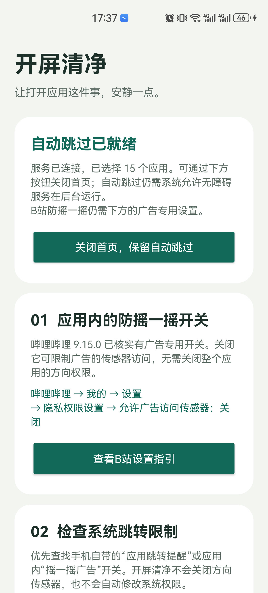

防摇一摇广告
关闭广告专用开关，减少“摇一下就跳转”。
部分应用提供独立的广告传感器选项。开屏清净帮你找到并核对这些设置，由你亲自关闭。
查看B站已验证的设置方法 →它如何保留正常使用？
我们只推荐广告专用选项，不关闭整个应用或系统的方向传感器。正常旋转、导航与体感功能应按应用原有设置继续使用；不同版本以其选项说明为准。
应用原生开关由该应用保存。没有专用开关的应用，无法靠这份引导统一阻止摇一摇跳转；自动跳过也不能保证赶在跳转前完成。
把手机还给日常使用。
帮你找到广告专用开关，也尝试点掉明确的“跳过”。
免登录、免注册。当前为 v0.1.7 公开预览版。查看版本与限制
免费使用打赏完全自愿
App 无联网权限识别在手机内完成
随时可以停止无需注销或联系客服
不需要账号，也不用填写反馈表。
点击“免费下载”，下载完成后打开安装包，按手机提示安装。
下载安装包 ↓打开开屏清净，选择需要处理的应用，按首页提示开启无障碍服务与自动跳过。
先了解权限用途 →根据指南关闭目标应用的广告专用开关，再打开应用观察实际效果。
查看已验证的设置路径 →在 App 首页关闭“启用自动跳过”即可暂停。也可以在系统中关闭无障碍服务，或直接卸载。
查看关闭方法 →优先利用应用原生设置，
再用本地辅助点击减少操作。
关闭广告专用开关，减少“摇一下就跳转”。
部分应用提供独立的广告传感器选项。开屏清净帮你找到并核对这些设置，由你亲自关闭。
查看B站已验证的设置方法 →我们只推荐广告专用选项，不关闭整个应用或系统的方向传感器。正常旋转、导航与体感功能应按应用原有设置继续使用；不同版本以其选项说明为准。
应用原生开关由该应用保存。没有专用开关的应用，无法靠这份引导统一阻止摇一摇跳转；自动跳过也不能保证赶在跳转前完成。
识别明确的“跳过”按钮，替你少点一次。
你开启无障碍服务、选择应用后，工具只在短暂的开屏时段按本地规则识别和点击。
按三步说明开启 →规则结合应用、按钮文字、控件信息及位置判断，只尝试明确的开屏“跳过”。不会把普通“×”或一般“关闭”当作通用点击目标。
没有可访问按钮、广告样式改变或系统停止服务时，可能无法跳过。无障碍点击仍可能误判，首次使用请观察；不建议将银行、支付、导航和体感游戏加入处理范围。
无需联网权限，不上传界面或应用列表，不请求设备唯一标识；识别时在本机读取界面控件，保存设置和少量最近操作记录。
系统授予服务读取界面控件和模拟点击的能力，授权范围较大。服务会读取前台窗口与包名以判断应用，再仅对你选中的应用识别和点击广告按钮；不能将授权理解为“只能看见所选应用”。
权限必须由你本人开启。你可以随时关闭本服务，不需要 root。
App 保存启用状态、所选应用、跳过计数及少量最近操作记录，包括最近按钮文字。这些数据保留在手机内，不上传给作者；不保存完整页面或输入内容，没有统计 SDK。可以通过系统清除应用数据或卸载删除。
本地记录不等于完全不读取数据。系统权限较大，规则也可能漏过或误判，开源与无联网权限都不是绝对安全保证。
访问网站、下载安装包、打开源码和提交反馈需要联网。本站没有第三方分析、广告或追踪脚本。下载统计读取 GitHub 公开的发行附件累计次数，读取失败时使用带时间的本站快照，不向作者发送点击事件。GitHub Pages 与公开 API 仍会处理访问请求。
支持作者时，二维码图片由本站提供。识码、收款方核对与付款确认在你选择的支付平台进行，由该平台按其规则处理。
显示已实测的华为 GOA-AL80 指南。
HarmonyOS 4.2 · Android API 31 · 2026-10-24
此设置由B站保存，不依赖开屏清净后台。用户已确认本机有效；其他B站版本以实际页面为准。
查看项目验证记录 ↗本机已有划掉卡片后的知乎广告提前跳过记录。强行停止、一键清理、重启、长期省电及其他机型不在此结论内。系统关闭了无障碍服务后，需要本人重新开启。
华为官方后台说明 ↗收录流程：社区报告 → 核对来源与影响范围 → 独立复测或官方资料佐证 → 标注验证状态。系统升级后可回到“待复测”。
关闭首页与暂停功能是不同操作。
在 App 首页关闭“启用自动跳过”，即暂停辅助点击。
到手机系统的无障碍设置，关闭“开屏清净 · 自动跳过”。
卸载会清除 App 本地设置。已在B站等应用中单独关闭的广告开关，由对应应用继续保存。
“关闭首页，保留自动跳过”会继续保留服务。系统强行停止、一键清理或省电管理仍可能中断服务，具体以机型实测为准。
当前是可调试、开发签名的测试包，尚非正式稳定版。已知机型和广告样式之外的效果仍需验证。
免费下载到手机不需要 GitHub 或 ChatGPT 账号。下载完成后打开安装包，按手机提示安装。
GitHub 安装包下载 — 次
正在读取公开下载记录，不影响下载安装包。
数据时间：

历史0.1.4 · 华为实机截图，供了解功能；当前0.1.7界面已改版，此图不代表新版。
开发文档、规则与验证方法公开，
欢迎带着具体场景一起完善。
查看项目结构、本地构建、界面引导和规则测试说明，再提交可以复现的修改。
阅读开发者文档 ↗目前只处理开屏阶段明确的跳过按钮。信息流、视频中插等应用内广告尚未支持，后续先讨论可行场景、权限与误触风险。
参与共建与场景讨论 ↗请分享型号、系统、准确路径与实际结果。最终公开提交使用 GitHub 账号，社区报告经复核后才收录。
请勿填写手机号、IMEI、设备序列号、密码、账号画面或完整日志。
请在支付 App 中核对收款方，金额自行填写，付款由你本人确认。
使用同一部手机时，可长按图片保存，再在对应支付 App 中从相册识别二维码。本站不记录付款信息，也不自动打开支付或提交付款。